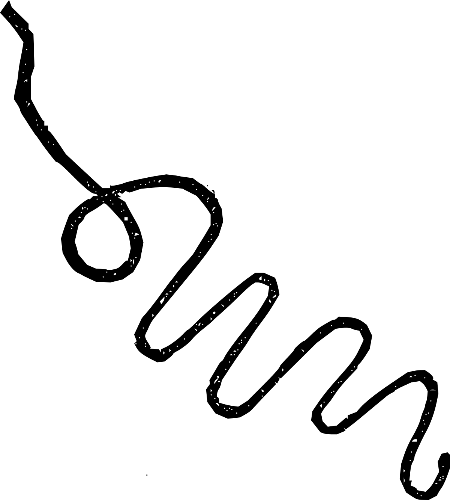

For years I've been meaning to get around to reading Laurence Sterne's magnum opus The Life and Opinions of Tristram Shandy, Gentleman (1759-67 in nine volumes). I've got a couple copies of the book. The chapters are short. I would have found an audiobook version, but not only are most—ahem—abridged! (get thee behind me!!), there are several visual elements that Sterne uses that, surely, couldn't come across all that well in audio.
That changed when I finally discovered the Anton Lesser narration. Unabridged; a solid 19 hours! Wonderful voice for the book and the characters. And, without too much interference, those visual elements are neatly interpreted into an audible form.
It is a contention of mine, howsoever well done the narration is, that reading visually brings it's own peculiar flavor to a written work. This is a work that could benefit the modern reader by both listening and sight-reading the text. I've started skimming through my Dover paperback, but another proper read-through might warrant listening to the Lesser narration at the same time (and by Lesser, ironically, I mean of course the Best of all Shandy narrations). In particular: how was the blacked-out page vocalized? or the one that's marbled? How are those squiggles said? I've seen them in the book but have no idea where they were when listening to it, so even though I have listened to the whole thing I couldn't tell you how Anton Lesser interpreted them. I think he may have whistled those squiggles.
On to the text itself.
If I am to properly discourse in the manner of Tristram Shandy, I would here have to digress into some seemingly unrelated topic that has come to mind, with the excuse that by telling it, the intended following subject (the aforementioned "text" as specified in the preceding paragraph) will be more properly understood. Before we get to the actual text itself, well, let me tell you about my cat... . . .
What has just occurred to me is that this is one tactic of all blog posts, articles, YouTube vlogs, and TikToks———in short, all internet content that aims for virality———present the hook, tease it, then withhold the actual discussion of the topic at hand for the next however-many minutes. This comes under the heading of a rhetorical device, if I understand the term correctly. The difference, I suppose, is that these modern folks generally do come to the point, however inexpertly and/or anticlimactically, by the end of their post, and not, say, only at the end of the 21st post.
I want to be able to write like Sterne. There's the obvious joy he had in writing, in playing with words, and chapters, the very format of a novel, narrative, and the printing of the book. I love a good em dash (some of Sterne's are monstrously long emmmmmmmmmm dashes), or dozens, liberally sprinkled throughout a several-page-long paragraph. Similarly I love that he censors himself, or things his characters say, with asterisks (for which Lesser hmmmmm'ed in several suggestive and characterful ways).
Sterne skips, what is it, ten pages because Tristram tore them out. Later on, he skips two whole chapters and only later describes what had been intended to be included, but wasn't, and his completely reasonable reasons why. Many chapters are a mere sentence or two.
He gives himself the freedom to play.
I want to play like he did. Too few modern novelists, and fewer publishers, have the privileged cajones to seriously make the attempt at his level of play, and expect to sell a book. Somehow Mark Danielewski achieved this with House of Leaves (pushing many more boundaries than Shandy, largely thanks to the infinite typographical possibilities available to us in the modern era), but that is another case of lightning-in-a-bottle.
As it applies to my writings, I want to feel the freedom to sometimes write incredibly short posts. To spew, as I may have done in college, amateur surrealist/dadaist poetry from time to time. After all, this is a very non-thematic sort of blog. Unless, somehow, my week-to-week stream-of-consciousnesses keep on theme. I want to sometimes write snippets of fiction; little scenes with absolutely no story attached. Dedications to a non-specific potential patron.
So often when I have an idea for something to write about, I realize I have very little authority to write about that thing, outside of my uninformed, subjective opinions. I realize, too, however, that does not stop anyone on the Internet from aggressively opinionating all over the place. For myself, for most things, I am by contrast hardly opinionated at all. At the very least I am hardly ever opinionated enough to respond to posts I disagree with, I certainly won't argue, and very rarely do I offer grist for a friendly debate. I have my opinions, you have yours; as long as nobody's being abused in the process, what do I care if you don't like what I like.
Exceptions to every rule: I avoid negative reviews of Tolkien and Mervyn Peake, in particular, because these reviewers piss me off; obviously they have ZERO appreciation for fantastic literature and gorgeous prose. You were bored by them? FUCK RIGHT OFF. ... so I avoid reading those negative reviews.
What was I talking about.
Right: I want to enjoy writing, and writing in the ways I want, and not to any notion of what's gonna be popularly received. I want to vary my sentence lengths from the abrupt to the sentences that don't walk, but run on and on and on, marathon-style; excessive punctuation is put to use—em dashes, asterisks, colons and semi-colons, parentheticals and exclamations—and obscurer words are wrangled and hopefully employed correctly. I want to shift topics as I please and at whatever length I desire.
Not all of these may conform to the Shandean Ideal, but Laurence Sterne is an inspiration. Maybe next I can tackle some James Joyce.
